PROFT 2015
São Paulo, 2-4 de dezembro de 2015
Informações preliminares
Data: dias 2, 3 e 4 de dezembro de 2015
Local São Paulo, SP (Avenida Paulista, 735 - Jardins)
Inscrições para Ouvintes: R$ 180,00 até 30 de novembro ou enquanto houver vagas. Envie seu nome completo, endereço, telefone de contato para profissaotradutor@gmail.com, informando em que banco prefere fazer o depósito (Bradesco, Banco do Brasil, Santander, Itaú ou Citibank), para receber os dados bancários.
Mais uma vez, atendendo a inúmeros pedidos de participantes e palestrantes dos anos anteriores, o Scientia Vinces Cursos irá promover o V Simpósio Profissão Tradutor (PROFT 2015). Este evento acadêmico e social procura reunir Tradutores, Intérpretes, Revisores e profissionais de áreas correlatas em um evento descontraído, simpático e voltado para a atualização profissional e para o estabelecimento de contatos, criação de novas redes de comunicação interpessoal e reciclagem de conhecimentos.
Como nas edições anteriores, o PROFT 2015 terá Palestrantes convidados (professores de renome internacional, convidados especialmente para abrilhantarem ainda mais o evento), apresentação de comunicações orais e pôsteres, números artísticos, sorteios de brindes, material de divulgação, coffee-breaks para descontração e networking, e uma linda festa de encerramento.
Veja abaixo algumas fotografias representativas dos dois eventos anteriores, e não deixe de consultar nossa publicação PROFT em Revista (www.proftemrevista.com) onde serão publicados os artigos completos dos colegas que efetivamente fizerem sua apresentação durante o evento.
PROFT 2010
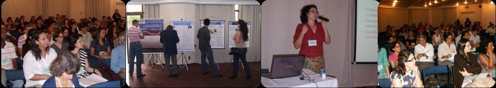PROFT 2011
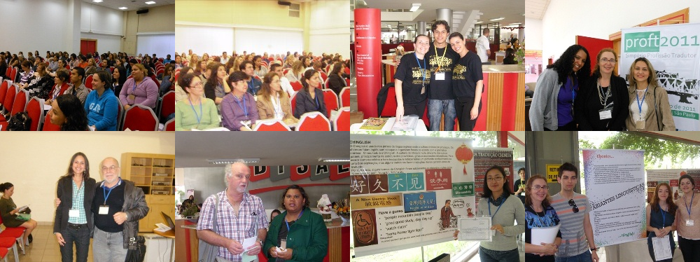PROFT 2013
.jpg)
.jpg)
.jpg)
.jpg)
.jpg)
.jpg)
.jpg)
.jpg)
.jpg)
.jpg)
.jpg)
.jpg)
PROFT 2014
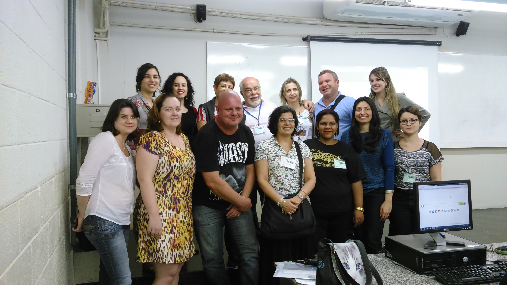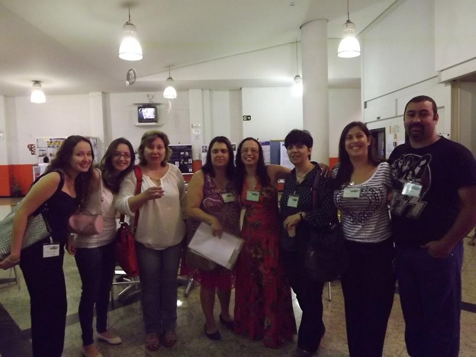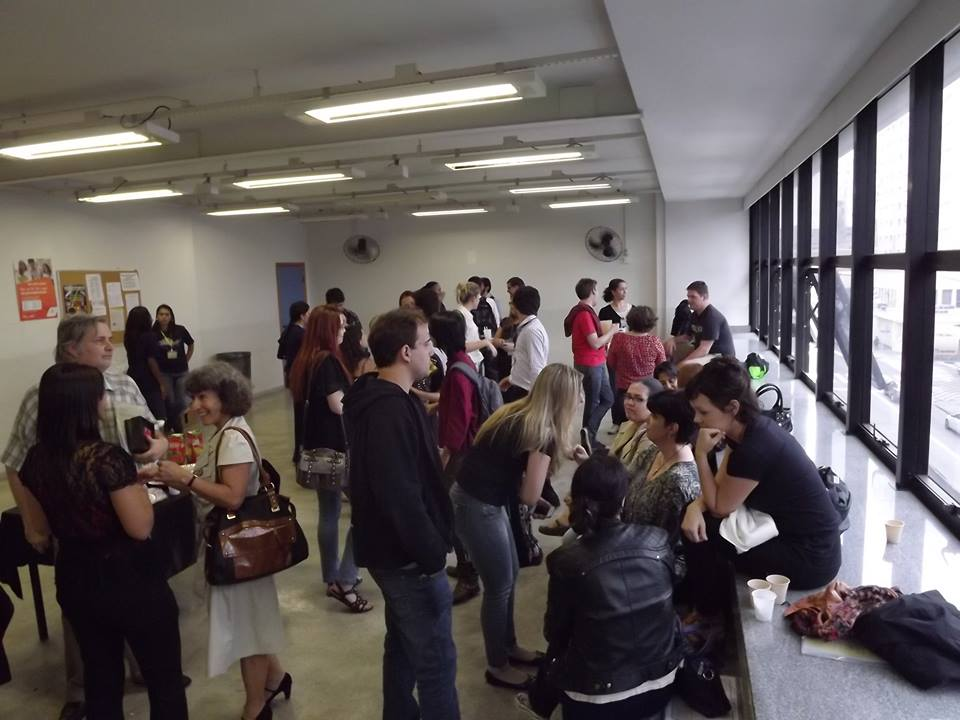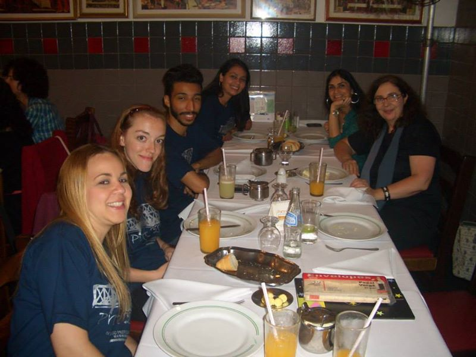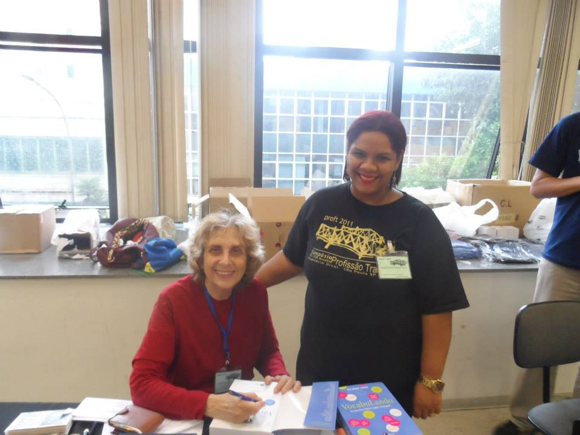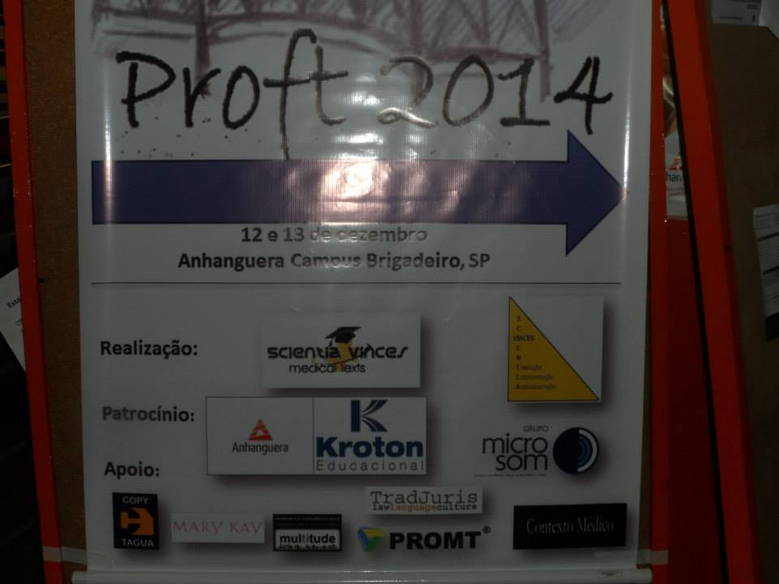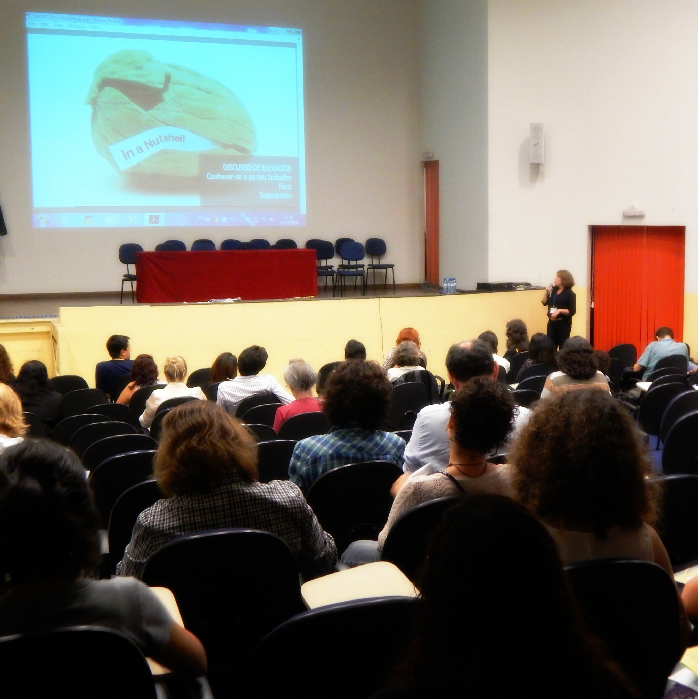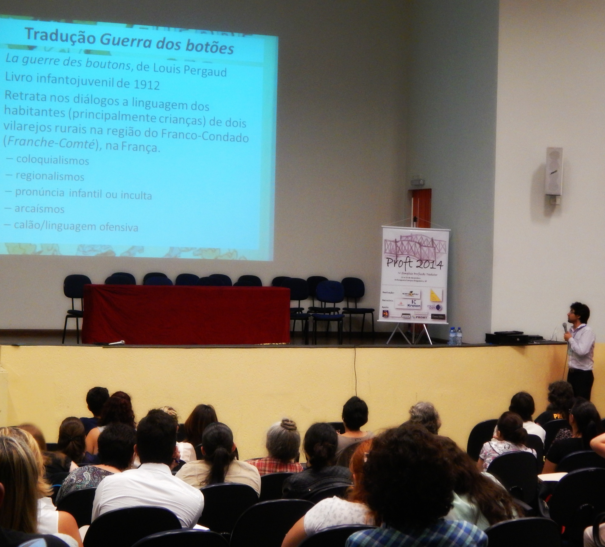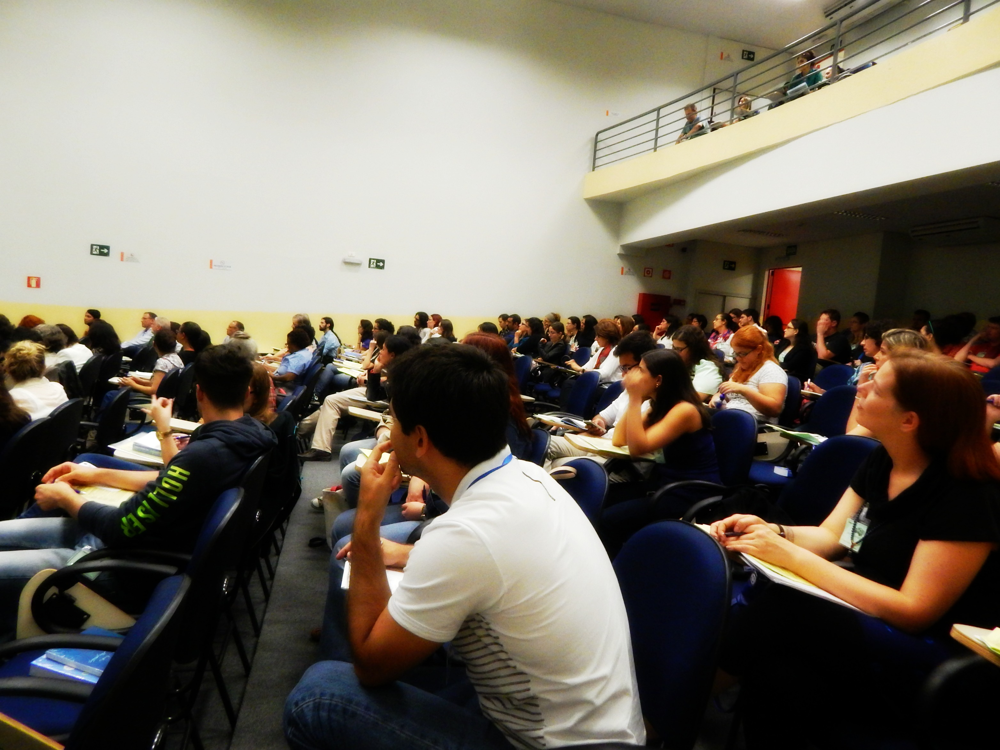
Nosso Simpósio irá abordar apresentações de temas práticos e científicos, temperadas por uma programação social e cultural preparada especialmente para a ocasião. Você é fundamental para o sucesso do evento. Participe, divulgue, colabore!!!